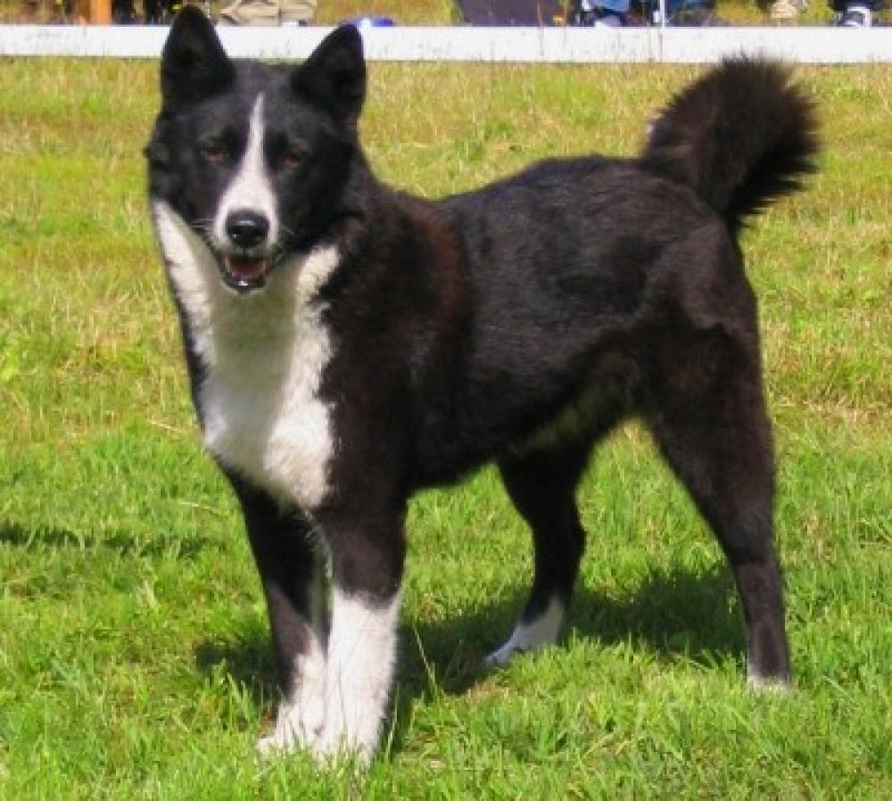

По умолчанию ширина блочного элемента принимает значение auto, и он, как правило, занимает всю доступную ширину. Поэтому описанным методом по центру можно выровнять только такой элемент, у которого явно задана ширина в процентах или пикселах. После чего к стилю слоя следует добавить отступ слева (стилевое свойство margin-left) и справа (margin-right) со значением auto. Впрочем, также можно воспользоваться универсальным свойством margin со значением auto (пример 1).
Слой, создаваемый через тег <div>, является блочным элементом веб-страницы. Это означает, что по ширине слой занимает все доступное пространство и всегда начинается с новой строки. Поэтому ограничение ширины слоев никак не приведет к тому, что блоки станут располагаться рядом. Для нашей цели следует воспользоваться стилевым свойством float со значением left. Это свойство превращает блочный элемент в плавающий, что в свою очередь приводит к выравниванию слоя по левому краю и его обтеканию другими элементами по правому краю. На деле же слои при подобной манипуляции выстраиваются не друг под другом как обычно, а рядом по горизонтали. Но только в том случае, когда ширина слоев задана через свойство width, как показано в примере 1.
| Ограничить | максимальную | ширину | таблицы | заданным | значением. |
| 1 |


Обтекание картинки текстом обычно используется для компактного размещения материала и связывания между собой иллюстраций и текста. Само обтекание создаётся с помощью стилевого свойства float, добавляемого к селектору IMG. Значение left выравнивает изображение по левому краю, right — по правому. Обтекание при этом происходит по другим, свободным сторонам.
| Первый | Второй | Третий | Четвертый |
|---|---|---|---|
| Первый | Второй | Третий | Четвертый |
| слева | справа |